우선 국가 비율
73.4% → 65.9% -7.5p
싱가포르·미국·호주·캐나다·영국·뉴질랜드에서 본 사람
생성 시각: 5/25 11:27 KST. 최근 3일 성과, 이번 업로드에 반영한 전략, 실제 업로드 화면, 계정 전체 시청자 방향, 12시 타겟 오디언스 연구를 한 흐름으로 확인하는 리포트.
성장 판단: 성장 방향이 약해졌다. 3일 전 대비 우선 국가 비율 -7.5p, 싱가포르 비율 -6.8p다.
평가 범위: 리포트 범위는 5/22~5/25다. 5/25 업로드 12개는 아직 성과 판단에 넣지 않고, 성장 판단은 5/22~5/24 게시물을 본 사람 기준으로 본다.
계정 전체 유입: 최근 7일 신규 시청자는 54%(7,313명)로 절반을 넘는다. 팔로워 안에서만 도는 계정이 아니라 추천면에서 새 관객을 계속 받고 있다는 점은 좋다. 일별 계정 전체 시청자는 5/18 2,282명에서 5/23 3,799명으로 +1,517명(+66.5%) 움직였다. 피크는 5/19 4,662명이다. 피크를 다시 넘지는 못했으므로 같은 장면·같은 아트처럼 반복으로 보이는 첫 장은 줄여야 한다. 싱가포르 70.9%(약 9,598명)가 계정 유입의 중심이라 타겟 방향은 맞다. 한국 8.5%(약 1,151명)는 아직 남은 지역 노이즈다. 한국어·국내 맥락을 줄이고 영어권 도시 생활자의 첫 장으로 더 좁힌다.
그래서 다음 루틴은: 다음 루틴은 형식 실험을 줄이고 싱가포르 도시형 생활공간과 역할이 분명한 첫 장 문장으로 다시 좁힌다.
싱가포르·미국·호주·캐나다·영국·뉴질랜드에서 본 사람
현재 가장 중요하게 보는 싱가포르 시청자
현재 구매 가능성이 가장 높다고 보는 연령대
홈데코·개인 아트 구매 가능성이 높은 쪽으로 보는 기준
이 게시물 또는 계정을 본 사람 중 우리가 우선 보고 있는 국가 비율입니다. 현재 기준은 싱가포르, 미국, 호주, 캐나다, 영국, 뉴질랜드입니다.
이 게시물 또는 계정을 싱가포르에서 본 사람의 비율입니다.
25-44세 시청자 비율입니다. 현재 우리가 가장 중요하게 보는 구매 가능 연령대입니다.
여성 시청자 비율입니다. 현재 홈데코/개인 아트 구매 가능성이 높은 쪽으로 보고 있는 기준입니다.
저녁에 타겟 오디언스 관련 콘텐츠 표면을 찾는 작업이 정상 실행됐는지입니다.
저녁 오디언스 탐색 작업에서 준비한 댓글/관찰 후보 수입니다. 댓글 자체보다 어떤 콘텐츠 표면에 계정을 붙일지 보기 위한 자료입니다.
| 날짜 | 확인된 게시물 | 확인된 시청자 | 우선 국가 | 싱가포르 | 25-44세 | 여성 | 타겟 적중 |
|---|---|---|---|---|---|---|---|
| 3일 전5/22 | 9/9 | 4,906명게시물 9개 | 73.4%(약 3,714명) | 71.7%(약 3,634명) | 56.7%(약 2,728명) | 79.9%(약 4,018명) | 5/9 |
| 그제5/23 | 6/6 | 648명게시물 6개 | 43.8%(약 439명) | 36.4%(약 421명) | 61.7%(약 378명) | 70.7%(약 493명) | 0/6 |
| 어제5/24 | 6/18 | 비율만 제공됨명수 없음 | 65.9%비율만 제공됨 | 64.9%비율만 제공됨 | 62.3%비율만 제공됨 | 79%비율만 제공됨 | 2/6 |
최근 7일 신규 시청자는 54%(7,313명)로 절반을 넘는다. 팔로워 안에서만 도는 계정이 아니라 추천면에서 새 관객을 계속 받고 있다는 점은 좋다. 일별 계정 전체 시청자는 5/18 2,282명에서 5/23 3,799명으로 +1,517명(+66.5%) 움직였다. 피크는 5/19 4,662명이다. 피크를 다시 넘지는 못했으므로 같은 장면·같은 아트처럼 반복으로 보이는 첫 장은 줄여야 한다. 싱가포르 70.9%(약 9,598명)가 계정 유입의 중심이라 타겟 방향은 맞다. 한국 8.5%(약 1,151명)는 아직 남은 지역 노이즈다. 한국어·국내 맥락을 줄이고 영어권 도시 생활자의 첫 장으로 더 좁힌다.
최근 시청자 중 우리가 우선 보고 있는 국가 비율입니다. 현재 기준은 싱가포르, 미국, 호주, 캐나다, 영국, 뉴질랜드입니다.
최근 시청자 중 싱가포르에서 본 사람의 비율입니다. 지금은 싱가포르 도시형 생활공간 수요를 중요하게 보고 있습니다.
5/19 4,662명이 최근 7일 피크다. 가장 최근 확인일은 5/23 3,799명으로 전일 대비 +609명이다. 피크 이후 다시 회복된 것은 계정 분배가 완전히 식지 않았다는 신호라 좋다. 다만 피크를 넘지 못했기 때문에 다음 콘텐츠는 반복된 방·반복된 아트처럼 보이는 요소를 줄이고 첫 장의 감각 역할을 더 선명하게 해야 한다.
최근 시청자 분배는 싱가포르로 강하게 열려 있다. 다만 겉으로는 특정 주거 형태를 앞세우지 않고, 도시형 아파트의 보통 일상 공간이라는 넓은 언어로 간다. 거실·홈오피스만 보지 말고 침실, 주방, 욕실, 복도, 세탁공간처럼 사용자의 감각이 반복해서 생기는 생활공간까지 확장한다.
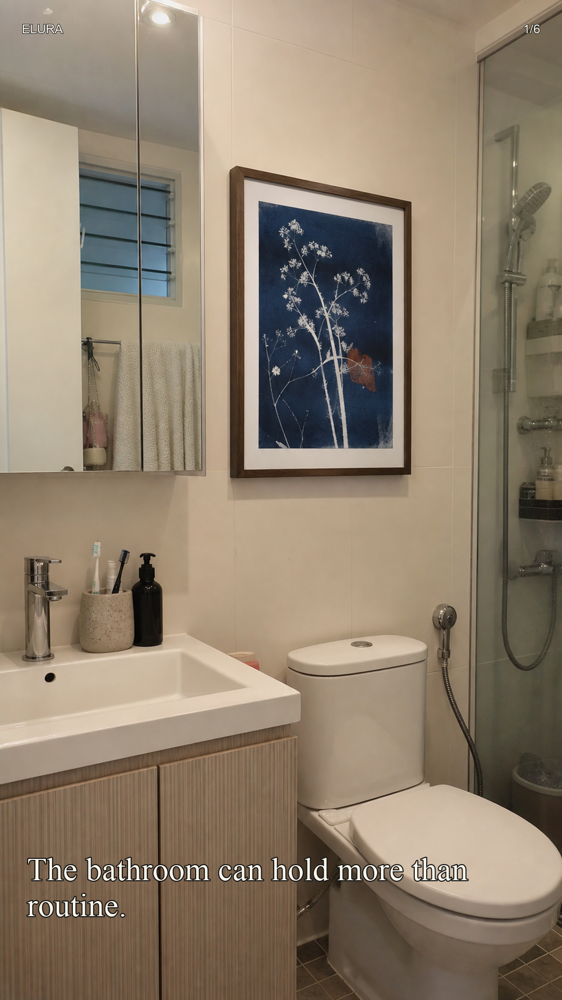
욕실 거울 앞에서 다시 보게 되는 신호이 게시물: 우선 국가 80.8%(약 687명), 싱가포르 79.6%(약 677명), 25-44세 52%(약 442명), 여성 78%(약 663명)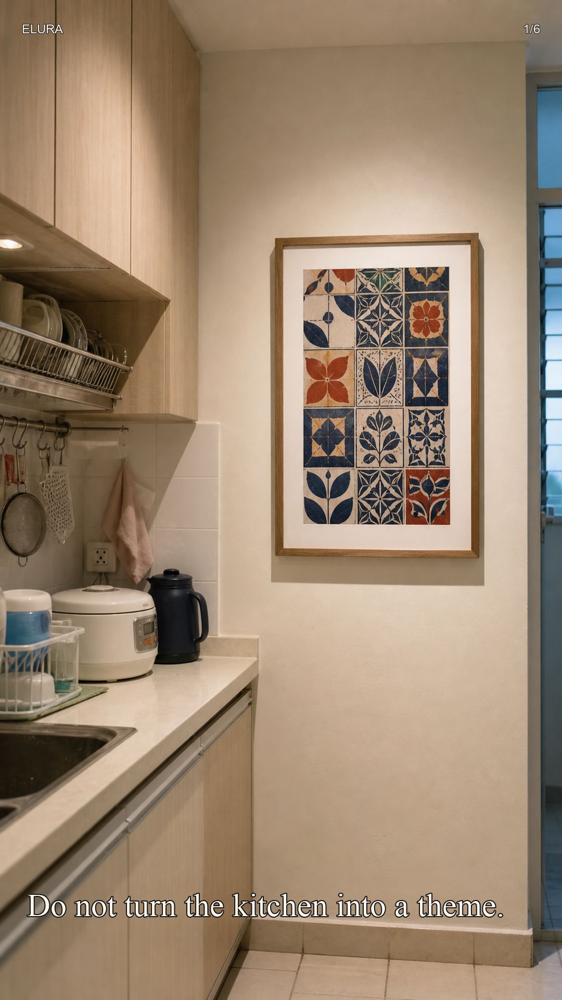
주방 그림이 아니라 주방에서 필요한 감각이 게시물: 우선 국가 86.7%(약 729명), 싱가포르 85.9%(약 722명), 25-44세 57%(약 479명), 여성 90%(약 757명) 프린트를 사기 전에 역할부터 정하기이 게시물: 우선 국가 79.4%(약 642명), 싱가포르 78%(약 630명), 25-44세 51%(약 412명), 여성 80%(약 646명)
프린트를 사기 전에 역할부터 정하기이 게시물: 우선 국가 79.4%(약 642명), 싱가포르 78%(약 630명), 25-44세 51%(약 412명), 여성 80%(약 646명)판단 욕실·주방·현관·세탁공간처럼 매일 쓰는 공간이 최근 시청자 데이터에서 가장 잘 맞았다. 중요한 건 방을 예쁘게 꾸미는 말이 아니라, 그 공간에서 무엇을 멈추고 어떤 역할을 둘지 먼저 말하는 구조다.
다음 액션 다음 6개 중 2개는 싱가포르 도시형 생활공간의 보통 일상 장면으로 간다. 같은 방, 같은 아트, 같은 줌 구도는 다시 쓰지 않고 첫 장에는 '테마 그림을 사지 마라', '벽을 채우기 전에 역할을 정하라'처럼 선택을 멈추는 문장을 둔다.
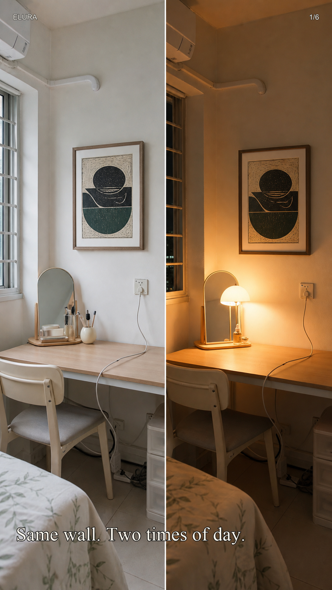
같은 벽을 아침과 밤에 다르게 보기이 게시물: 우선 국가 76.5%(약 334명), 싱가포르 75.1%(약 327명), 25-44세 59%(약 257명), 여성 84%(약 366명)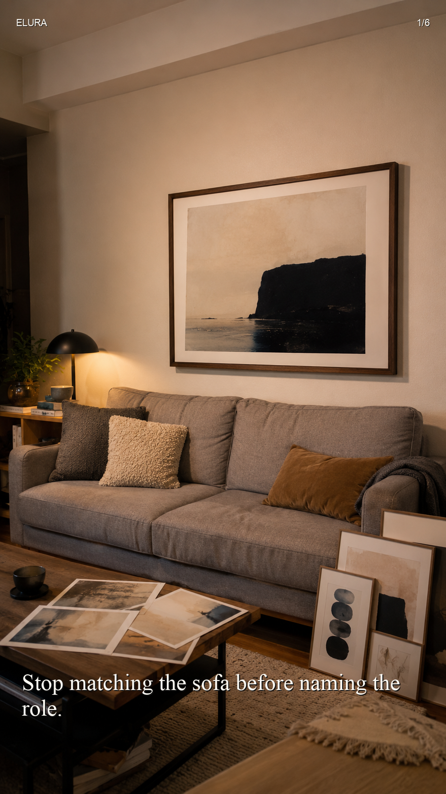
방 색에 맞추기 전에 역할부터 보기이 게시물: 우선 국가 77.3%(약 311명), 싱가포르 75%(약 302명), 25-44세 66%(약 265명), 여성 79%(약 318명)판단 댓글을 요구하는 참여형 문구는 아직 이르다. 대신 색보다 역할을 먼저 본다, 거울 앞에서 나를 다시 보게 하는 신호처럼 사용자가 조용히 자기 상황에 대입하는 장치는 서비스 방향과 맞다.
다음 액션 투표, 유어턴, 다음 방향 같은 문구는 쓰지 않는다. 세 가지 선택지를 보여주더라도 공개 선택을 요구하지 않고, 사용자가 자기 방과 현재 상태를 혼자 비교하게 만든다.
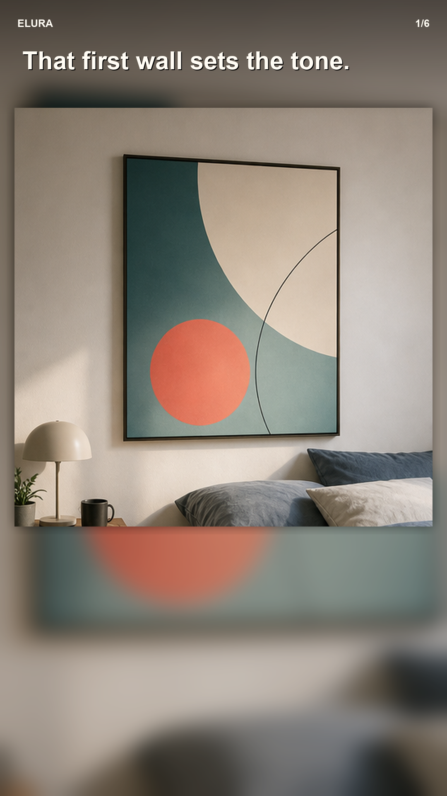
morning wall tone setter계정 평균: 우선 국가 76.3%(약 10,329명), 싱가포르 70.9%(약 9,598명), 25-44세 60.4%(약 8,177명), 여성 77%(약 10,424명)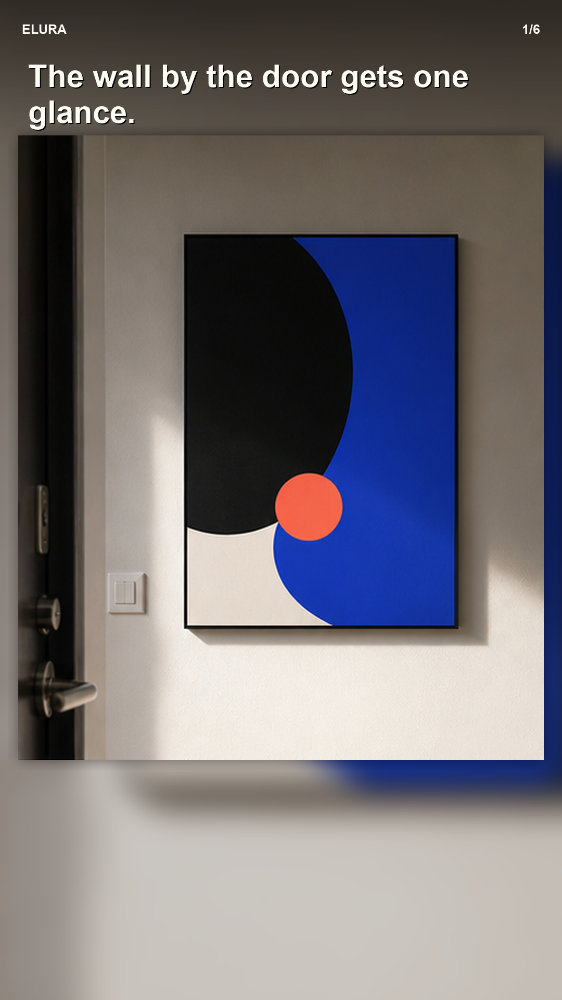
entry wall one glance계정 평균: 우선 국가 76.3%(약 10,329명), 싱가포르 70.9%(약 9,598명), 25-44세 60.4%(약 8,177명), 여성 77%(약 10,424명)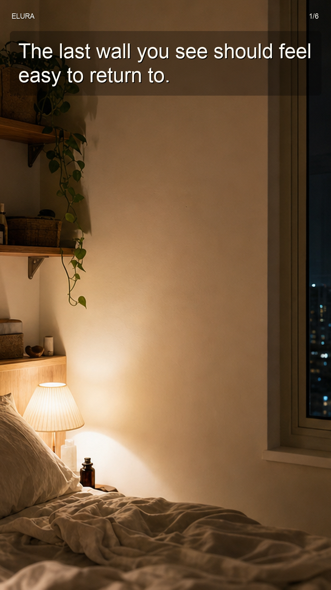
bedroom role before color recovery이 게시물 · 명수 없음: 우선 국가 80.3%, 싱가포르 80.3%, 25-44세 55%, 여성 71%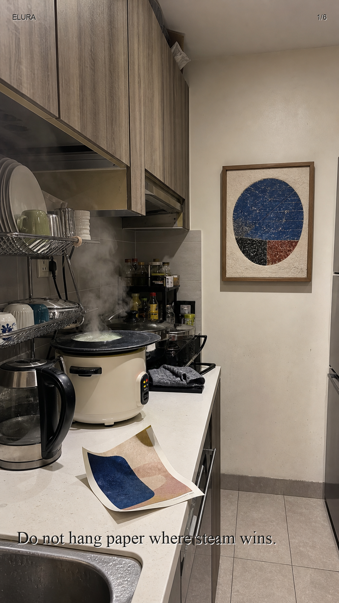
steam zone material role test이 게시물: 우선 국가 78.5%(약 68명), 싱가포르 74.4%(약 64명), 25-44세 0%(약 0명), 여성 0%(약 0명)판단 최근 낮은 조회수 후보들은 문장 이전에 첫 화면이 약한 경우가 많았다. 첫 장에 하나의 강한 아트, 어색한 빈 벽, before/after 대비, 눈이 멈추는 거울·책상·침대 지점이 있어야 스크롤을 멈출 이유가 생긴다.
다음 액션 다음 6개는 첫 슬라이드마다 글을 가려도 보이는 시각 정지 신호를 지정한다. contact sheet에서 작게 봐도 하나의 초점이 없으면 업로드하지 않는다.
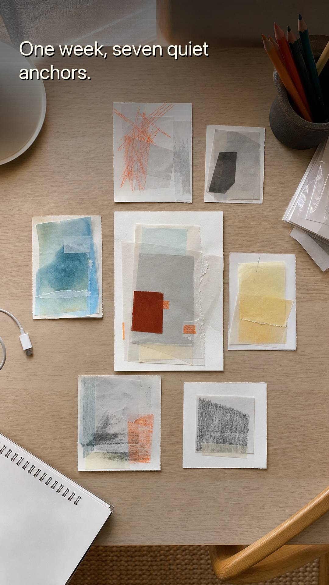
일주일의 작은 기준점을 보여주는 구성이 게시물: 우선 국가 71.2%(약 252명), 싱가포르 64.5%(약 228명), 25-44세 54%(약 191명), 여성 76%(약 269명)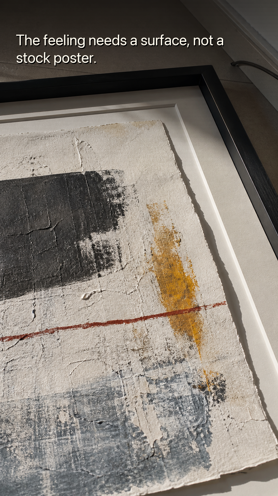
프린트 표면과 기억의 질감을 가까이 보여주기이 게시물: 우선 국가 81%(약 615명), 싱가포르 79.4%(약 603명), 25-44세 49%(약 372명), 여성 68%(약 516명)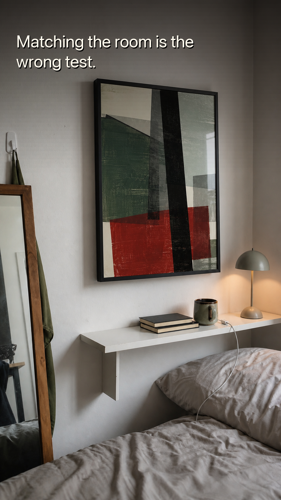
잘못된 구매 이유를 올바른 역할로 바꾸기이 게시물: 우선 국가 68.3%(약 174명), 싱가포르 67.3%(약 172명), 25-44세 53%(약 135명), 여성 82%(약 209명)판단 화면 일부가 이유 없이 어둡게 갈라지거나, 중요한 지점이 아닌 곳으로 확대되거나, 같은 이미지에 글만 바뀌면 사용자는 브랜드보다 저품질 자동 생성물로 먼저 읽는다.
다음 액션 업로드 전 검수에서 확대 위치, 밝기 처리, 슬라이드별 이미지 중복을 먼저 본다. 같은 이미지에 문장만 바뀐 후보는 바로 폐기한다.
 재질 차이로 감각의 역할을 비교이 게시물: 우선 국가 74.4%(약 265명), 싱가포르 72.1%(약 257명), 25-44세 50%(약 178명), 여성 75%(약 267명)
재질 차이로 감각의 역할을 비교이 게시물: 우선 국가 74.4%(약 265명), 싱가포르 72.1%(약 257명), 25-44세 50%(약 178명), 여성 75%(약 267명) 한 문장을 세 가지 재질 방향으로 번역이 게시물: 우선 국가 60%(약 89명), 싱가포르 57.6%(약 85명), 25-44세 52%(약 77명), 여성 72%(약 107명)
한 문장을 세 가지 재질 방향으로 번역이 게시물: 우선 국가 60%(약 89명), 싱가포르 57.6%(약 85명), 25-44세 52%(약 77명), 여성 72%(약 107명)판단 재질 비교는 새로워 보일 수 있지만 사용자의 삶으로 들어오는 장면이 약하다. 아트 표면만 보여주면 왜 내 방에 들어와야 하는지가 흐려진다.
다음 액션 재질은 첫 장의 주인공이 아니라 보조 증거로만 쓴다. 먼저 어떤 순간을 붙잡는지 보여주고, 그 다음에 표면·종이·질감을 보여준다.
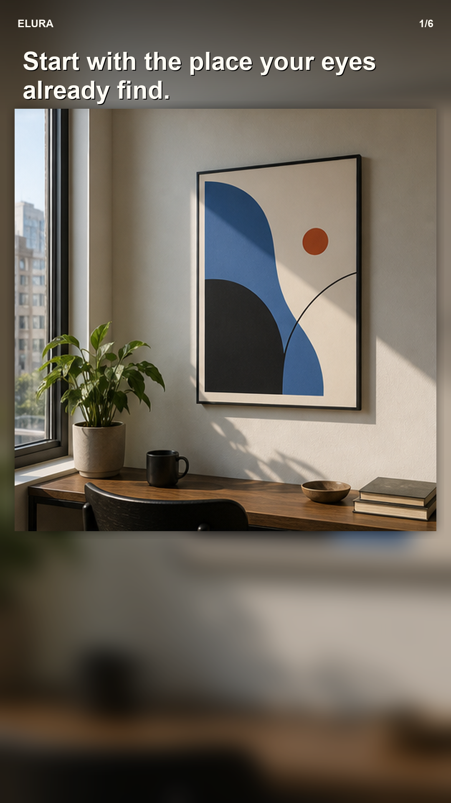
work shelf clear signal계정 평균: 우선 국가 76.3%(약 10,329명), 싱가포르 70.9%(약 9,598명), 25-44세 60.4%(약 8,177명), 여성 77%(약 10,424명)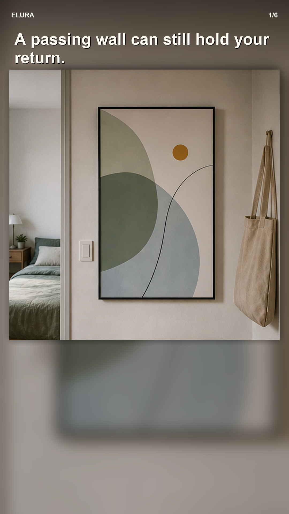
passage wall return signal계정 평균: 우선 국가 76.3%(약 10,329명), 싱가포르 70.9%(약 9,598명), 25-44세 60.4%(약 8,177명), 여성 77%(약 10,424명)재질 차이로 감각의 역할을 비교이 게시물: 우선 국가 74.4%(약 265명), 싱가포르 72.1%(약 257명), 25-44세 50%(약 178명), 여성 75%(약 267명)판단 첫 장에 아트가 너무 많으면 어디를 봐야 할지 모르고, 반대로 아트 없이 공간 사진만 있으면 일반 인테리어 사진처럼 지나간다. 둘 다 문장과 상관없이 눈길을 잡는 힘이 약하다.
다음 액션 첫 장은 `아트 과밀`, `공간만 있음`, `글 의존`, `약한 썸네일` 중 하나로 보이면 폐기한다. 좋은 문장으로 덮지 말고 이미지를 다시 만든다.
판단 사용자가 이미 프린트를 사려는 순간을 멈추는 방식은 서비스의 핵심과 맞다. 마음만 건드리는 게 아니라 실제 구매 선택과 몸의 행동을 잠깐 멈추게 하기 때문이다.
다음 액션 첫 장은 '이 그림 예쁜가?'가 아니라 '이 벽이 지금 내게 해야 할 일이 무엇인가?'로 시작한다. 장바구니, 프린트 선택, 빈 벽 앞에서 멈추는 장면을 쓴다.
판단 같은 벽도 아침과 밤에는 다르게 작동한다. 이걸 더 밀면 벽 하나가 아니라 매일 몸이 지나가는 짧은 동선을 하나의 기준점으로 만들 수 있다.
다음 액션 현관에서 식탁, 침대에서 욕실, 주방에서 세탁공간처럼 반복해서 지나가는 길을 보여준다. 아트는 길을 장식하는 물건이 아니라 그 순간을 다시 잡아주는 표시로 둔다.
판단 참여 유도는 약하지만 비교 자체는 유효하다. 댓글을 달게 하지 않아도 세 역할을 보면서 내 상태에 가까운 것을 마음속으로 고르게 만들 수 있다.
다음 액션 A/B/C 투표가 아니라 색보다 역할이 먼저다는 구조로 보여준다. 성과가 들어오면 저장과 끝까지 넘긴 비율을 먼저 본다.
최근 3일 기준으로는 벽 그림 구매 고민 사용자, 첫 아파트·도시형 생활공간, 싱가포르 도시형 생활공간 쪽이 가장 잘 맞았다. 판단 근거는 실제로 게시물을 본 사람의 국가·연령·성별 데이터다.
유지 슬롯은 싱가포르 도시형 생활공간의 실제 일상 장면을 계속 쓰되, 방을 설명하지 말고 사용자가 바로 느낄 수 있는 순간을 먼저 말한다. 예: “That first mirror check sets the tone.”, “Your eyes only need one place to land.”, “At 8 PM, the kitchen needs one quiet point.”
삭제된 이미지, 확대 방식, 아트 인스턴스, 반쪽 어둠 처리는 재사용하지 않는다. 첫 장이 아트 과밀, 공간만 있음, 글 의존, 약한 썸네일 중 하나로 보이면 좋은 카피가 있어도 다시 만든다.
새 시도는 “새로운 방”이 아니라 새로운 설득 방식이어야 한다. 구매 순간 끊기, 같은 공간의 시간 변화, 매일 지나는 길의 기준점, 사적 메모의 번역처럼 사용자의 삶 안으로 들어오는 형식을 우선한다.
오늘 올라간 6개는 아직 게시물별 시청자 데이터가 0/6개라 성과 판정 대상이 아니다. 지금 볼 것은 첫 장이 방 꾸미기가 아니라 사용자의 선택을 멈추는지, 그리고 이미지·줌·공간 인스턴스가 반복되지 않는지다.
성과 숫자보다 첫 장에 글을 읽기 전에도 보이는 시각 중심이 있는지 본다. 아트가 너무 많거나, 공간 사진만 있거나, 글을 가리면 의미가 사라지면 실패다.
같은 아트 재사용, 같은 공간 재사용, 잘못된 확대, 반쪽 어둠, 흰 설명 화면은 성과와 무관하게 폐기한다.
장소에 맞춘 그림이 아니라 사용자의 감각이 아트로 투영되고, 그 감각이 매일 보는 자리에 놓이는 장면이어야 한다.
TikTok Studio가 오늘 6개의 게시물별 국가·연령·성별을 제공하면, 이 카드들은 실제 타겟 농도로 다시 판정한다.
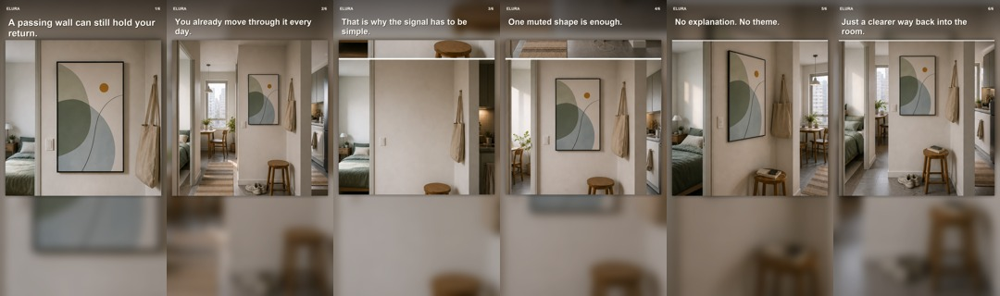
A wall you pass every day can still hold your return.
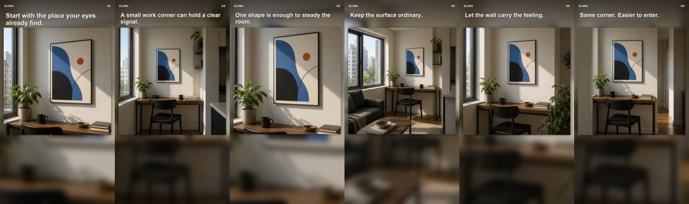
A small work corner can start with one clear visual signal.
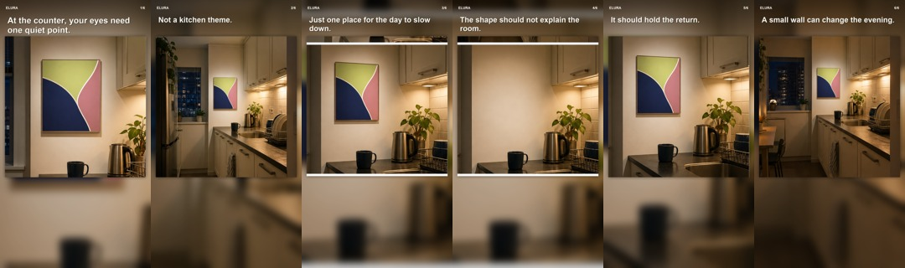
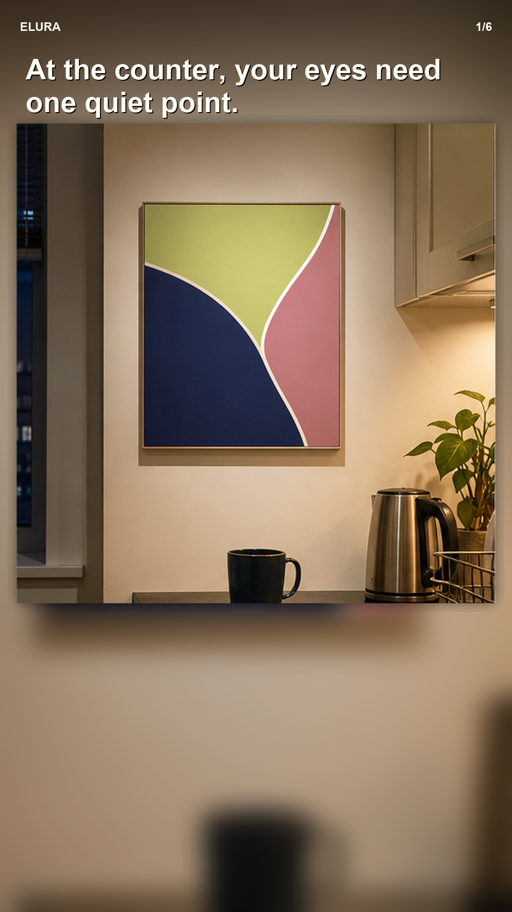
After work, the kitchen does not need a theme.
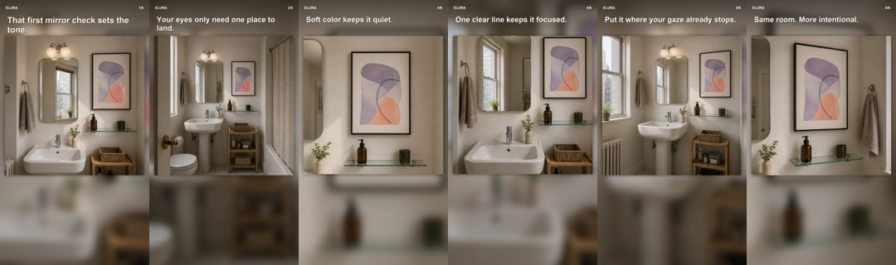
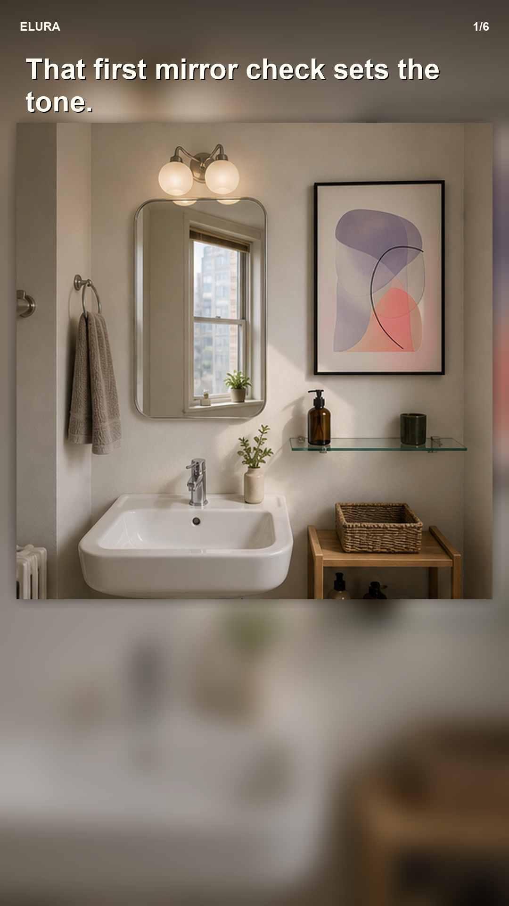
That first mirror check sets the tone.
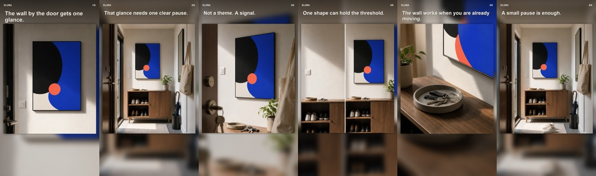
The wall by the door only gets a second.
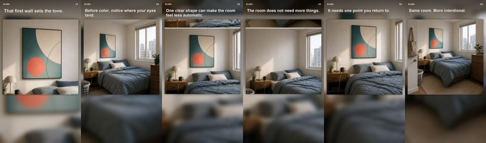
The first wall can set the tone before the day starts.
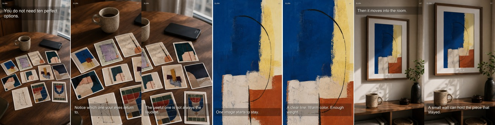
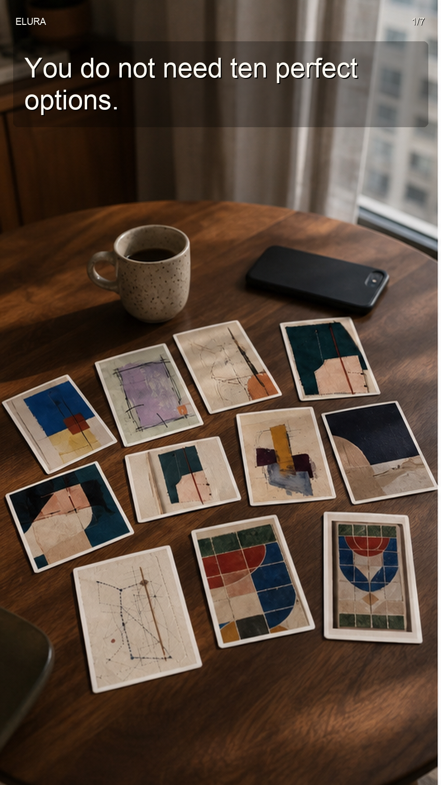
You do not need ten perfect options.
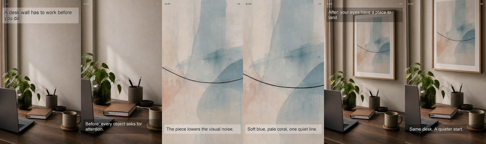
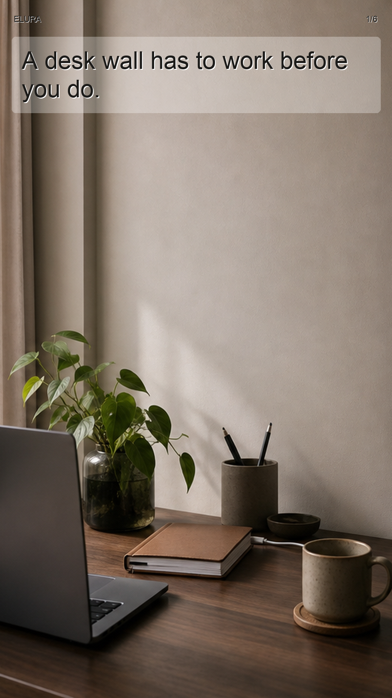
A desk wall has to work before you do.
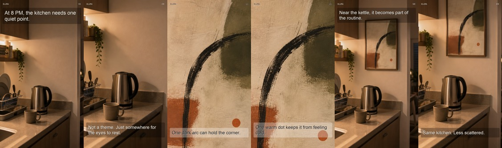
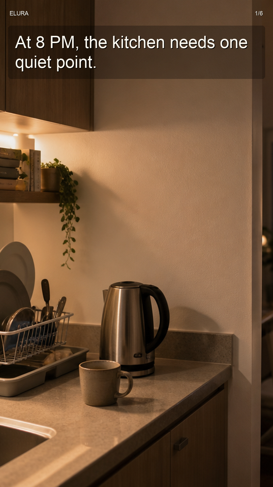
At 8 PM, the kitchen needs one quiet point.
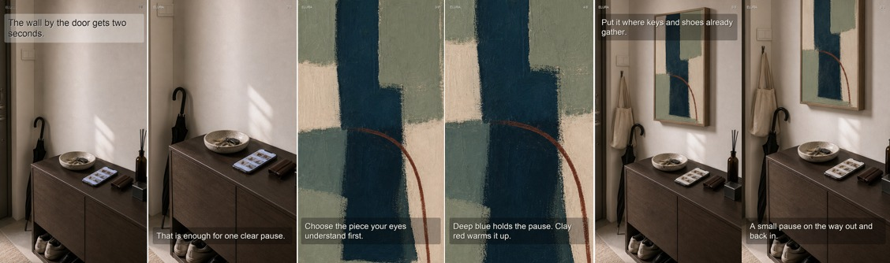
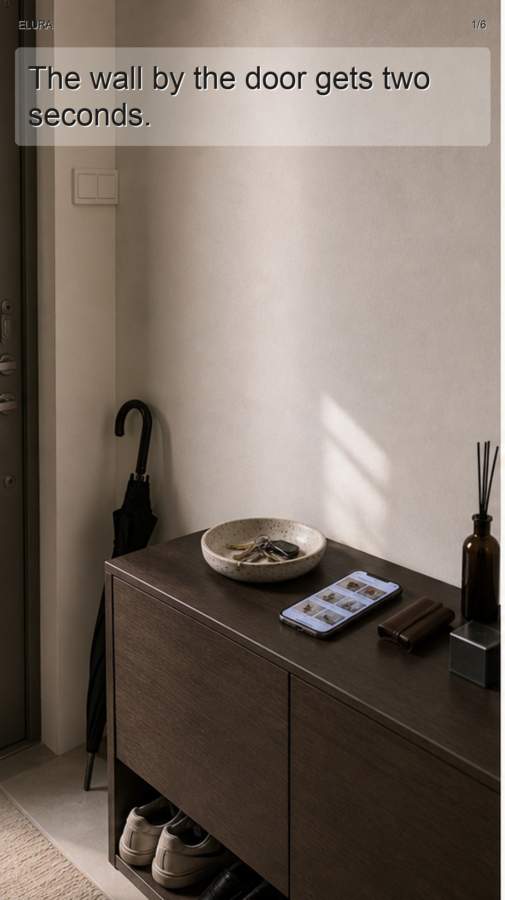
The wall by the door gets two seconds.
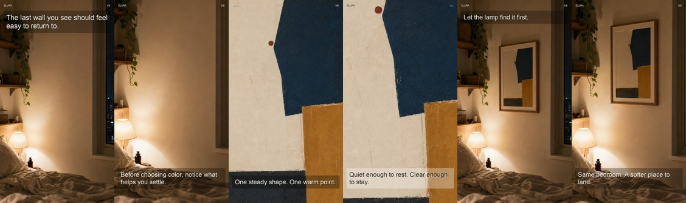
The last wall you see at night should feel easy to return to.
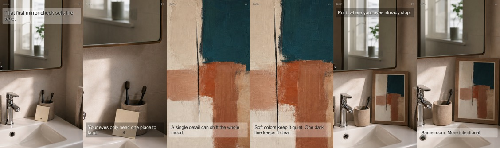
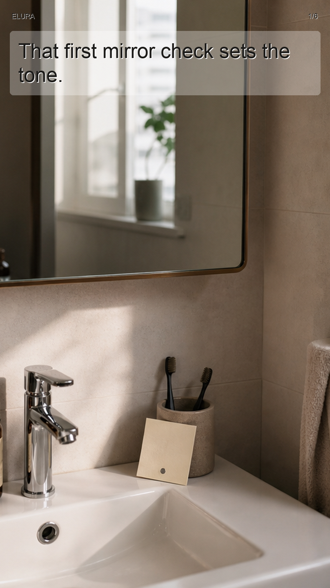
That first mirror check sets the tone.
최근 7일 시청자는 싱가포르 70.9%(약 9,598명)로 강하게 몰려 있다. 미국은 1.9%(약 257명)라 아직 약하고, 한국은 8.5%(약 1,151명)로 초기 계정 노이즈가 남아 있다. 다음 제작은 싱가포르 도시형 일상 공간 신호를 유지하되, 한국 반응이 붙을 만한 한국어/국내 맥락은 더 줄인다.
최근 시청자 중 우리가 우선 보고 있는 국가 비율입니다. 현재 기준은 싱가포르, 미국, 호주, 캐나다, 영국, 뉴질랜드입니다.
최근 시청자 중 싱가포르에서 본 사람의 비율입니다. 지금은 싱가포르 도시형 생활공간 수요를 중요하게 보고 있습니다.
25-44세 시청자 비율입니다. 현재 우리가 가장 중요하게 보는 구매 가능 연령대입니다.
여성 시청자 비율입니다. 현재 홈데코/개인 아트 구매 가능성이 높은 쪽으로 보고 있는 기준입니다.
최근 시청자 분배는 싱가포르로 강하게 열려 있다. 다만 겉으로는 특정 주거 형태를 앞세우지 않고, 도시형 아파트의 보통 일상 공간이라는 넓은 언어로 간다. 거실·홈오피스만 보지 말고 침실, 주방, 욕실, 복도, 세탁공간처럼 사용자의 감각이 반복해서 생기는 생활공간까지 확장한다.
12시 연구는 싱가포르만 보지 않고 LA/NYC 같은 북미 도시형 생활패턴과 타겟의 2D 아트 취향을 함께 본다. 다음 6개 중 최소 1개는 북미 도시형 아파트 생활패턴에서 온 공간/훅으로 만든다. 단, 공개 카피에서 지역명이나 경제 조건을 대놓고 말하지 않는다. 또한 아트 스타일 실험은 물리적 매체명이 아니라 2D 시각 언어로 기록한다. 예: editorial soft geometry, digital color-field, photographic collage, restrained figurative line, cinematic shadow abstraction.
12시 루틴에서 LA/NYC 같은 북미 도시형 아파트 게시물을 실제로 열어 첫 2초 훅, 댓글 반응, 저장을 부르는 벽/방 위치를 확인한다.
다음 6개 중 최소 1개는 북미 도시형 아파트 생활패턴에서 온 공간/훅으로 만든다. 단, 공개 카피에서 지역명이나 경제 조건을 대놓고 말하지 않는다.
물리적 작품 종류가 아니라 2D 이미지의 색, 선, 여백, 감정 밀도, 방 안에서의 존재감을 본다.
다음 제작은 최소 2개 슬롯에서 새로운 2D 시각 스타일을 테스트한다. 예: editorial soft geometry, photographic collage, restrained figurative line, cinematic shadow abstraction.
싱가포르의 도시형 서비스야드는 기능이 많은 생활공간이라 벽면과 세로 공간까지 수납 가능성으로 보는 흐름이 강하다.
세탁공간 콘텐츠는 빨래 이미지가 아니라 짧은 동선, 벽면, 빛, 반복 동작을 보여주고 아트는 그 반복을 덜 무겁게 만드는 기준점으로 둔다.
서비스야드는 세탁만 하는 곳이 아니라 작은 식사 자리, 미니 홈오피스, 식물과 휴식이 섞이는 다목적 코너로도 제안된다.
다음 실험은 '중요하지 않은 구석도 내 삶의 한 장면을 담을 수 있다'는 문장으로 시작하고, 방 이름보다 사용자의 반복 동선을 먼저 잡는다.
도시형 주방은 준비 공간이 부족하고 서비스야드와 환기 동선이 답답하다는 불만이 반복된다.
주방 콘텐츠는 음식, 접시, 예쁜 조리대가 아니라 수납 압박, 환기, 반복 사용감, 잠깐 멈추는 신호를 먼저 보여준다.
북미 25-44 도시형 홈데코 오디언스가 어떤 분위기의 2D 이미지를 저장하고 구매 후보로 보는지 확인한다.
아트 스타일 실험은 물리적 매체명이 아니라 2D 시각 언어로 기록한다. 예: editorial soft geometry, digital color-field, photographic collage, restrained figurative line, cinematic shadow abstraction.
LA/NYC의 작은 도시형 집에서 사람들이 어떤 위치에 아트를 두고, 어떤 방식을 '내 취향'으로 느끼는지 본다.
북미 실험은 SG 신호를 버리는 것이 아니라, 도시형 생활패턴을 넓히는 역할로 쓴다. LA/NYC 소형 집의 빛, 책상, 침대 옆, 주방 코너를 다음 6개 중 최소 1개에 반영한다.
이런 작은 방은 기능만 담는 곳이 아니다. 계속 돌아오게 되는 감각도 담을 수 있다.
중요해 보이는 방이 아니어도, 내 안의 중요한 감각을 붙잡을 수 있다.
A small city apartment does not need a bigger room first. It needs one place where the day can land.
A city apartment can feel more intentional without becoming more decorated.
A small everyday corner can still hold a real chapter of your life. It does not have to be a perfect room first.
작고 평범한 구석도 내 삶의 한 장면을 붙잡을 수 있다.
이건 벽을 채우는 그림이 아니라, 방에 오래 두고 싶은 감각을 주기 때문에 작동한다.
방에 맞는 그림을 먼저 고르지 말고, 가까이 두고 싶은 감각을 먼저 고른다.